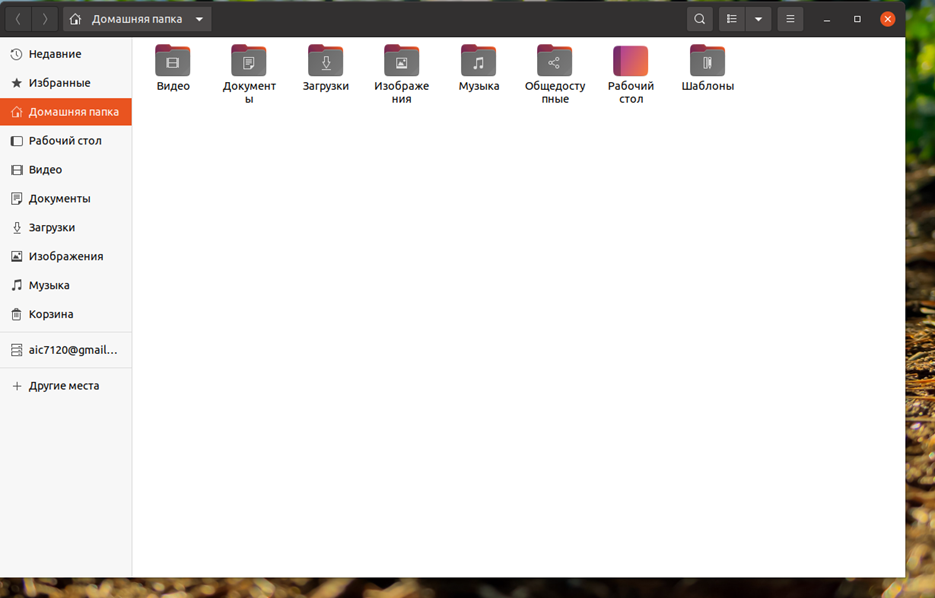
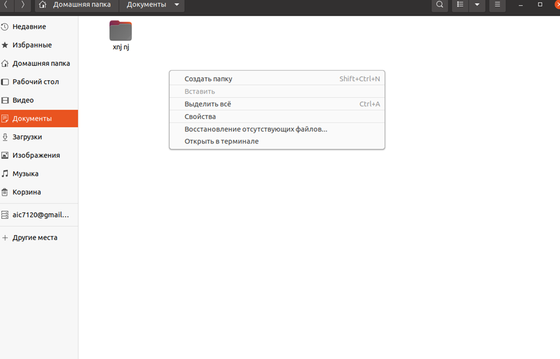
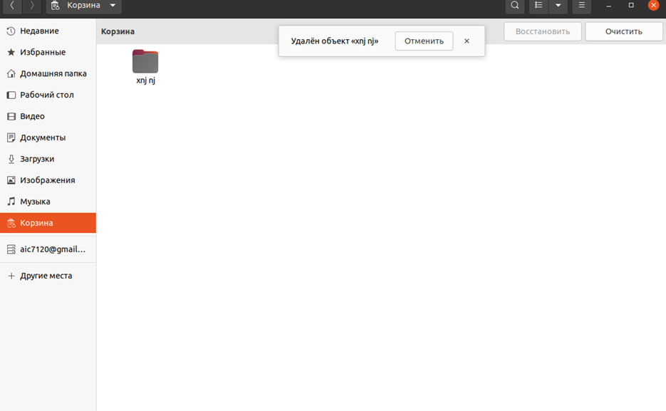

Apt – менеджер пакетов с интерфейсом командной строки. Он предоставляет команды для поиска и управления, а также запросов информации о пакетах. Для упрощения работы с APT можно использовать консольные оболочки APTITUDE или Synaptic.
APTITUDE — это утилита, выполняющая роль «надстройки» для APT. Разработчики программы добавили полезные функции, оптимизирующие систему поиска пакетов, а также исправили ошибки, касающиеся разрешения зависимостей
В данной оболочке можно работать анологично проводнику в windows.
Она позволяет работать с файлами.
Создавать папки, файлы.
Позволяет подключаться к серверу. В моём случае он подключён к google disk.

Подключить к серверу
И так же есть корзина, которая работает так же как и в windows. Корзина